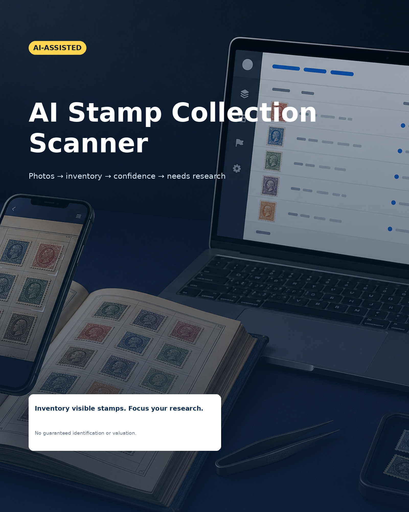

AI Stamp Collection Scanner
Snel starten — Browser Beta v1.0
Gebruik deze zeven stappen om je eerste postzegelinventaris te maken, controleren en op te slaan.

Gebruik deze zeven stappen om je eerste postzegelinventaris te maken, controleren en op te slaan.

Browser Beta v1.0 richt zich op inventariseren, controleren en opslaan. De scanner identificeert niet automatisch iedere postzegel en voert geen waardebepaling uit.
Foto’s blijven lokaal in je browser. Onbekende gegevens blijven beschikbaar voor handmatige controle. De scanner bepaalt geen waarde, zeldzaamheid of echtheid.